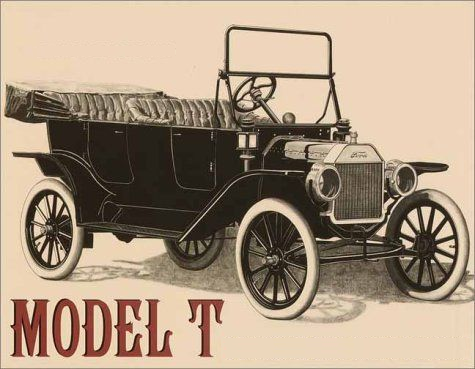
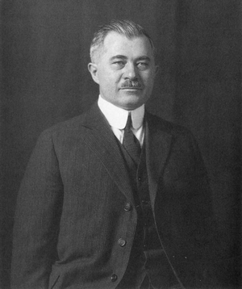

A Ford T-modell elnevezésű autót 1908 szeptemberétől 1927 októberéig gyártotta Henry Ford cége, a Ford Motor Company . Beceneve Tin Lizzy volt. Ez a modell tette lehetővé a középosztálybeli amerikaiak számára az utazást, és ez számít az első megfizethető autónak is, ami többek között a Frederick Winslow Taylor által feltalált futószalagnak volt köszönhető.
Az autó páratlan sikerének alapja a konstrukció egyszerűsége és célszerűsége volt, amelyet az akkori viszonyok között újdonságnak számító anyagok és technológiai alkalmazások is segítettek. Népszerűségének okán több mint tizenötmillió darabot gyártottak belőle. 1914-ben a Ford több autót gyártott, mint az összes többi járműgyártó együttvéve. A gyártókapacitás csúcsát 1925 jelentette, amikor napi 9-10 ezer autó gördült le a gyártósorról, és ez éves szinten már a kétmilliót is meghaladta.
Ez a modell magyar szempontból is nagy jelentőségű, hiszen tervezői csapatában két neves autókonstruktőrünk is jelen volt, Galamb József és Farkas Jenő. Ellentmondás is kialakult körülötte, hiszen a T-modellt egy nemzetközi szakzsűri szavazása során a 20. század autójává választották.
Galamb József (Joseph A. Galamb) (Makó, 1881. február 3. - Detroit, 1955. december 4.) magyar mérnök, konstruktőr, a Ford Motor Company tervezője, a Ford T-modell egyik megalkotója.
A Ford Motor Companynál 1905. december 11-én kezdett dolgozni mint műszaki rajzoló. Ekkoriban a cég szinte semmit sem gyártott önállóan; az alkatrészeket a Dodge Brothers szállította. Áttervezte a Ford N-modell hűtőrendszerét, majd a gyár főkonstruktőre lett. A szintén magyar Charles Balough, Haltenberger Gyulal és az amerikai Childe Harold Wills-szel együtt ő alkotta meg a híres Ford T-modell alkatrészeinek tervét. Az ő találmánya volt az elsőként a T-modellnél alkalmazott bolygóműves sebességváltó és a levehető hengerfejű motor.
Ford elsősorban azzal tudta lekörözni versenytársait, hogy a termelésben először is munkamegosztást vezetett be, néhány év múlva pedig ő alkalmazta először a futószalagos tömeggyártást, így költségei jelentősen csökkentek, a termelékenység pedig óriásit ugrott.
Míg korábban az alváz gyártása 12 és fél órát vett igénybe, addig az 1910-es évek közepétől a folyamat mindössze másfél órába került. A futószalagos gyártásban 1915 és 1925 között csak fekete autókat gyártottak, állítólag azért, mert a fekete festék száradt a leghamarabb, és így még magasabb termelési szintet érhettek el.
A T-modell olyan autó volt, amilyet Ford megálmodott, azaz: